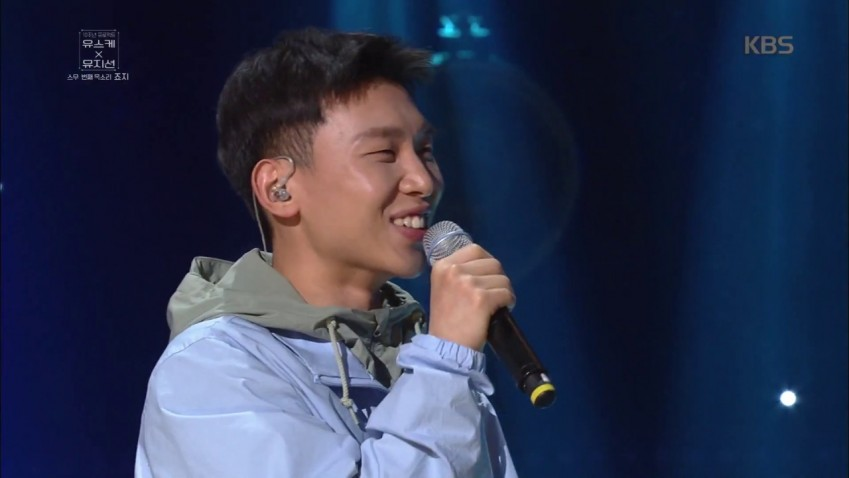

- Youra
- Sole
- Crush
- George
죠지
죠지는 한국보다 해외에서 먼저 인정받은 아티스트인데,
그 이유는 Apple Music에서 ’Swimming Pool’을 2018년을 빛낸 최고의 곡으로 선정하였기 때문.
그래서 그런지 본인의 팬카페를 소유중이다.
그러나 사실은 팬들 중 아무도 팬카페를 만들지 않아서 직접 만든(...) 팬카페라고 한다.
팬카페 가입조건이 조금 까다롭다고 한다. 죠지의 어머니 이름을 답변으로 제출해야 하기 때문이다.
하지만 답변을 아무렇게나 해도 가입할 수 있다고한다
음악을 시작하게 된 계기는 죠지의 아버지의 추천이라고 한다. 친구들과 다른 고등학교에 배정되어 우울해있는 죠지에게 음악을 해보는 건 어떻겠냐고 추천해주셨다고 한다.

작업은 주로 마음이 편해지는 집에서 하고 있으며, 평소에는 1시쯤 기상해서 밖에서 밥을 먹고, 카페에서 커피를 마신 후 집에 들어와 작업하는 일상을 즐긴다고 한다. 점심과 저녁은 모두 밖에서 끼니를 챙기는 편이라고 한다. 외출 시에는 가볍게 다니는 것을 좋아해서 지갑과 핸드폰만을 들고 다닌다고 하며, 보통 망원동 일대에서 출몰한다고 잘 알려져 있고 특히 망원 유수지에서 농구와 자전거를 자주 즐긴다고 한다.